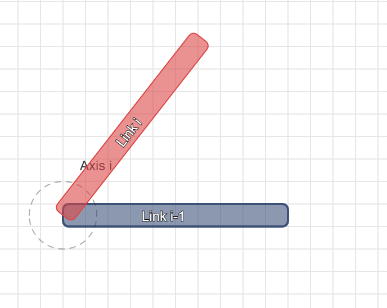
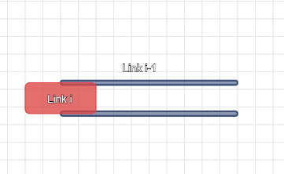
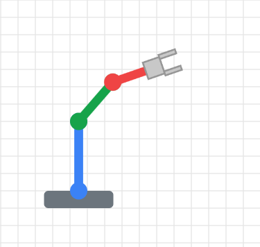
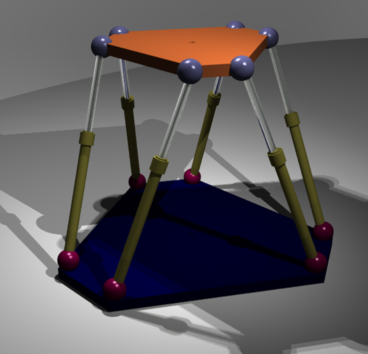

Links and Joints
The core structure of a manipulator is its kinematic chain, an assembly of rigid bodies (links) connected by articulations (joints).
Links
These are the rigid structural members of the robot that connect the joints. For the purpose of kinematic analysis, we often model them as simple lines of a fixed length connecting joint axes. In reality, they are complex structures, meticulously designed for high strength, high stiffness, and low inertia to allow for fast and precise movements. The first link in the chain, which is fixed to a stationary surface, is called the base link.
Joints
These are the components that allow constrained, relative motion between two links. In most industrial robots, each joint provides a single degree of freedom (DOF). The two most common types are:
Revolute (R) Joint

Allows relative rotation between two links about a single axis. It provides one rotational DOF. A human elbow or knee is a good biological analog.
Prismatic (P) Joint

Allows linear or sliding motion between two links along a single axis. It provides one translational DOF. A hydraulic cylinder extending and retracting is a classic example.
Kinematic Chain Structure
The manner in which links and joints are connected defines the robot's fundamental structure and capabilities.
Open Kinematic Chain (Serial Manipulators)

This is the most common structure. The links and joints are connected in series, forming a single, un-branched chain from the base to the end-effector. Manipulators with this structure are called serial manipulators. In an open chain, there is only one sequence of links connecting the base to the end-effector.
Closed Kinematic Chain (Parallel Manipulators)

In this structure, the kinematic chain forms one or more closed loops. This means there are multiple kinematic paths from the base to the end-effector. Manipulators with this structure are called parallel manipulators (e.g., the Delta robot). Closed chains generally offer higher stiffness, greater payload capacity for their size, and potentially higher accuracy, but often at the cost of a smaller, more complex workspace and more intricate kinematic analysis.